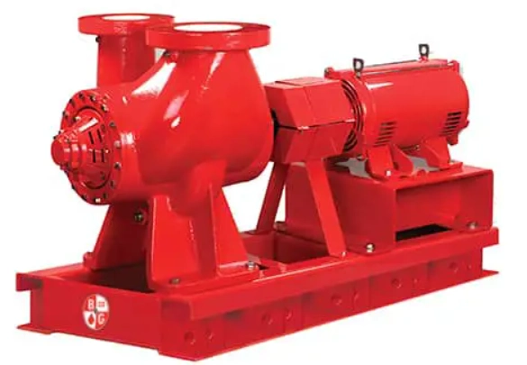
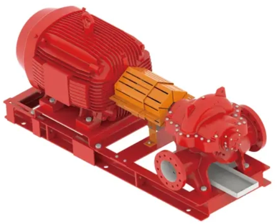
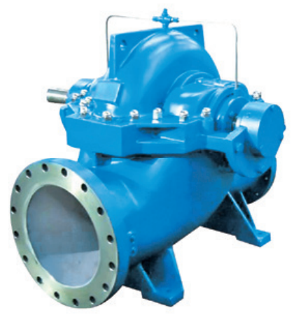

High flow pump solutions for water supply, industrial processes and large-scale applications.

Designed for high efficiency and energy savings, the pump offers multiple inlet and outlet configurations, reduced installation space requirements, stable operation, and easy installation and maintenance.

The pump delivers excellent hydraulic performance with high efficiency and energy savings. Its short-shaft design ensures durable and reliable operation while providing a cost-effective solution.

High efficiency and energy savings, stable and reliable operation, easy maintenance, and multiple material options available.
Contact our team for high flow pump selection and project support.
Request a Quote